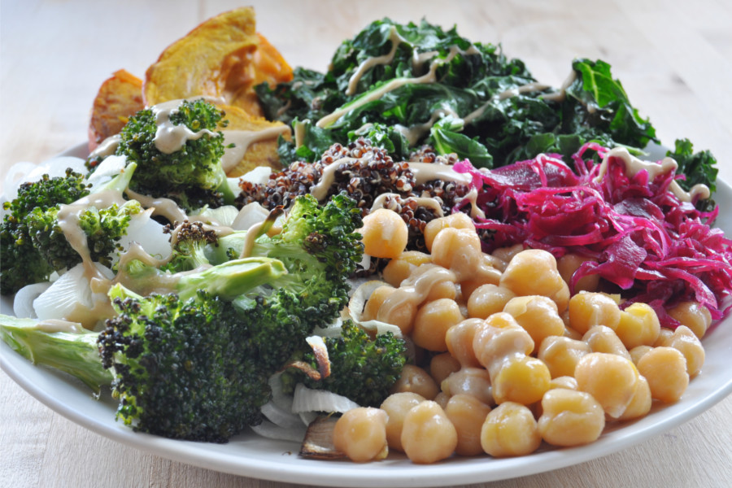

Brokuły

Dieta roślinna istotnie zmniejsza ryzyko chorób serca, wątroby, układu oddechowego, nadciśnienia, raka, zawału, alzheimera, cukrzycy, niewydolności nerek, sepsy, parkinsona, grypy i zapalenia płuc.
Szczegóły przybliża wykład dr Gregera

Krowie mleko
2
3